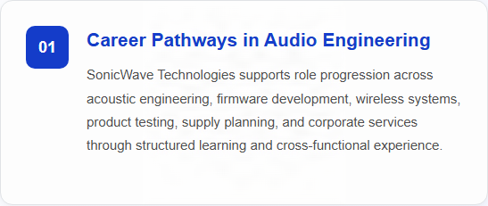
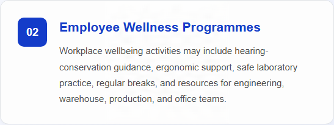

Company Overview
SonicWave Technologies is a consumer electronics company specializing in the research, design, manufacture, and distribution of audio products and wireless communication devices.
The company develops innovative audio solutions, including wireless earphones, headphones, speakers, and related accessories for everyday consumers and professional users.
Committed to delivering high-quality sound experiences, SonicWave Technologies integrates advanced technologies such as Bluetooth connectivity, Active Noise Cancellation (ANC), high-resolution audio, spatial audio processing, and long-lasting battery systems into its products.
Through continuous innovation and strict quality management, the company aims to provide reliable, comfortable, and premium audio solutions that enhance modern lifestyles.
Featured Product

Bluetooth 5.4 Wireless Earphones X1
Bluetooth 5.4 Wireless Earphones X1 is a premium true wireless audio solution featuring Bluetooth 5.4 connectivity, Active Noise Cancellation, high-resolution audio, and up to 60 hours of total battery life.
Key Features
- Bluetooth 5.4 wireless connectivity
- Active Noise Cancellation (ANC)
- Up to 60 hours of battery life
- High-resolution audio support
Latest News
SonicWave Technologies Introduces Bluetooth 5.4 Wireless Earphones X1
SonicWave Technologies announces the launch of Bluetooth 5.4 Wireless Earphones X1, a premium true wireless audio solution designed to provide exceptional sound quality, advanced wireless connectivity, and all-day listening comfort.
People, Careers and Community
Learn more about career development, employee wellbeing, and community engagement at SonicWave Technologies, including the programmes and initiatives that support our people and the communities where we operate.

Credentials applied with: Adobe Content Authenticity
Asset type: Signed PNG image
Credential location: Embedded in the asset file
Last verification: Passed on 12/11/2026 using Content Credentials Verify
Verify Content Credentials
Credentials applied with: Adobe Content Authenticity
Asset type: Signed PNG image
Credential location: Embedded in the asset file
Last verification: Passed on 12/11/2026 using Content Credentials Verify
Verify Content CredentialsCredentials applied with: Adobe Content Authenticity
Asset type: Signed PNG image
Credential location: Embedded in the asset file
Last verification: Passed on 12/11/2026 using Content Credentials Verify
Verify Content Credentials